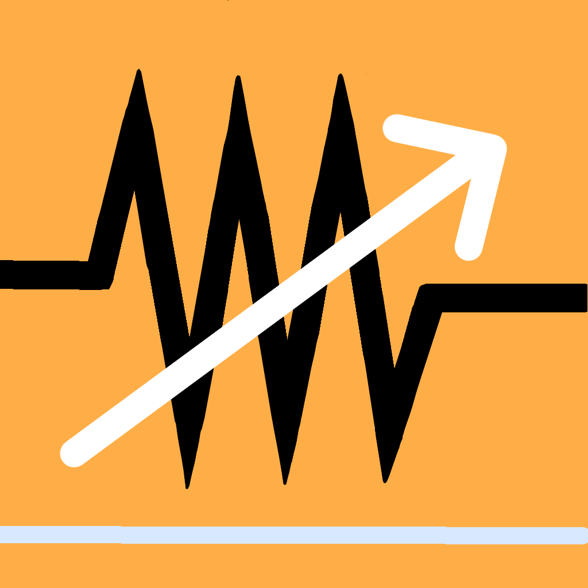
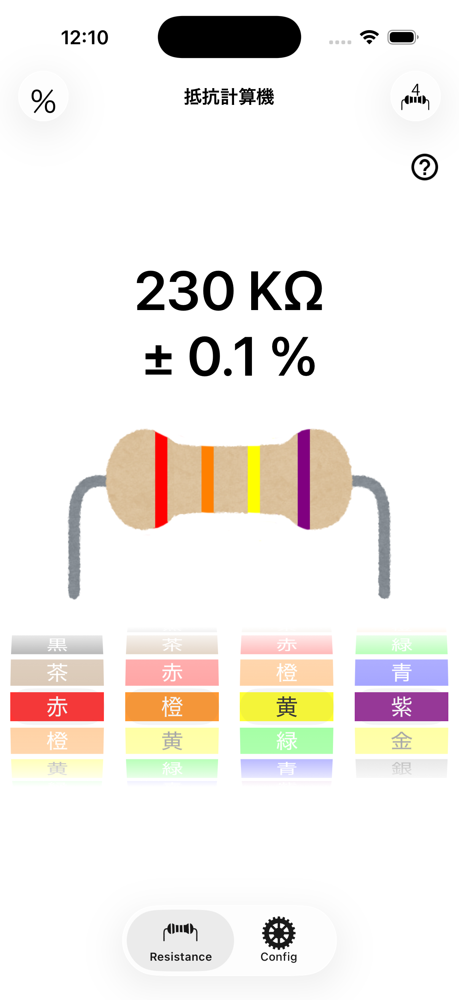

色を選ぶだけ
ピッカーを回して帯の色を合わせるだけ。抵抗値と誤差がその場で切り替わります。数値の入力は必要ありません。

抵抗計算機RESISTOR COLOR CODE
抵抗器の色帯を選ぶだけで、抵抗値と誤差をその場で計算。
4本帯・5本帯の両方に対応した、シンプルな抵抗計算機です。
iOS 14.0 以上 / iPhone 対応 ・ 無料

ピッカーを回して帯の色を合わせるだけ。抵抗値と誤差がその場で切り替わります。数値の入力は必要ありません。
ボタンひとつで4本帯と5本帯を切り替え。精密抵抗の読み取りにも使えます。
許容差を百分率で見るか、実際の抵抗値の幅で見るかを切り替え可能。設計中でも実測中でも使えます。
右上のボタンで4本帯・5本帯を切り替えます。手元の抵抗器に合わせて選んでください。
下のピッカーを回して、抵抗器に印刷された帯の色を左から順に選びます。
選んだ瞬間に抵抗値と誤差を表示。イラストの帯も同じ色に変わるので、見比べて確認できます。
アプリ内でもいつでも確認できます。
| 色 | 数値 | 乗数 | 許容差 |
|---|---|---|---|
| 黒 | 0 | ×1 | — |
| 茶 | 1 | ×10 | ±1% |
| 赤 | 2 | ×100 | ±2% |
| 橙 | 3 | ×1k | ±0.05% |
| 黄 | 4 | ×10k | — |
| 緑 | 5 | ×100k | ±0.5% |
| 青 | 6 | ×1M | ±0.25% |
| 紫 | 7 | ×10M | ±0.1% |
| 灰 | 8 | ×100M | — |
| 白 | 9 | ×1G | — |
| 金 | — | ×0.1 | ±5% |
| 銀 | — | ×0.01 | ±10% |